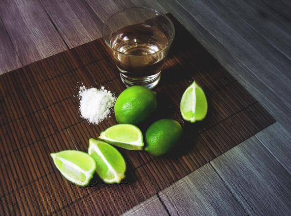
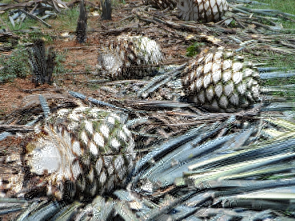
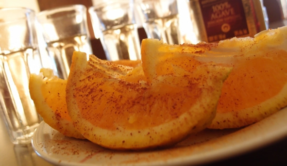

Понятие и виды текилы
Текила (исп. Tequila) – алкогольный напиток крепостью 38—55% об., получаемый путем дистилляции перебродившего сока голубой агавы на территории пяти штатов Мексики: Халиско, Гуанахуато, Мичоакан, Наярит и Тамаулипас. Наименование Tequila (дано в честь одноименного города, где началось производство) защищается по региональному принципу, только производители в указанных штатах при соблюдении классической технологии имеют право указывать на этикетке это название.
В производстве текилы кактусы не используются вообще. Голубая агава – травянистое растение, которое не имеет отношения к кактусам. В природе голубая агава растет лишь в высокогорных районах Западной Мексики на песчано-красноземных почвах. Для текилы подходят растения возрастом не менее восьми лет.
Сначала химадоры (сборщики агавы) отсекают листья, затем разрубают пиньи (сердцевины агавы) на несколько частей для удобной транспортировки. Сердцевины запекают в печах, чтобы извлечь из мякоти требуемые для брожения простые сахара. Когда агава становится сладкой, мякоть измельчают и выдавливают сок.

Голубая агава – сырье для производства текилы
Полученный сок переливают в бродильные чаны, вносят дрожжи и забраживают. Крепость отыгравшей браги из агавы редко превышает 7% об. Дистиллируют брагу в медных перегонных кубах, количество дистилляций зависит от производителя, обычно делают 1—3 перегонки. Готовую текилу разбавляют водой, иногда другими видами более дешевого спирта (только бюджетные сорта), затем сразу бутилируют или выдерживают в бочках.
Виды текилыПо содержанию сока агавы:
– Tequila 100% Agave – напитки премиум-класса, содержащие 100% спирта голубой агавы. Этот вид можно бутилировать только внутри регионов, где разрешено производство текилы. На этикетке обязательно должна присутствовать надпись 100% puro de agave или просто agave.
– Mixta – бюджетные и напитки среднего ценового сегмента, изготовленные путем смешивания (купажа) разных спиртов. Но 51% спирта должен быть получен из сока голубой агавы, остальной – из тростника или кукурузного сиропа. Каждый производитель использует свои пропорции, единый стандарт не предусмотрен. Понятно, что чем больше спирта из агавы, тем выше качество.
По сроку выдержки:
– Plata, blanca, silver («плата», «бланка», «сильвер», «белая», «серебряная») – бесцветная текила, срок выдержки которой не превышает двух месяцев. Напиток разливают в бутылки практически сразу после завершения процесса дистилляции. Имеет резкий вкус, но мексиканцы предпочитают текилу именно этого вида.
– Gold («голд», «золотая») – для получения внешнего сходства с выдержанной текилой при производстве «золотой» текилы используются специальные красители (дубовая эссенция) и ароматизаторы (карамель, ваниль), которые немного смягчают вкус. Добавки не могут превышать 1% от общего веса. Иногда еще текилу без выдержки, но подкрашенную колером, называют joven («ховен») – «молодая».
– Reposado («репосадо», «отдохнувшая») – срок выдержки текилы в дубовых бочках от 2 до 12 месяцев (обычно около года). Благодаря выдержке вкус смягчается, появляются легкие дубильные нотки.
– Anejo («аньехо», «выдержанная» или «старая») – перед разливом в бутылки текилу помещают в дубовые бочки на 1—3 года. Именно этот вид по соотношению цены и качества считается самым лучшим.
– Extra anejo («экстра аньехо», «дополнительно выдержанная») – текила, которая находилась в бочках более трех лет. Такие напитки претендуют на элитный статус.
История текилыПримерно за тысячу лет до нашей эры южноамериканские индейцы обнаружили, что забродивший сок агавы обладает приятным вкусом и неожиданно бодрящим эффектом. По легенде, это дар богов: пока в агаву не ударила молния, индейцы не знали, что в растении кроется густой нектар. До этого агаву использовали только как источник волокон для одежды и предметов быта.
Предки мексиканцев с удовольствием пили свой слабенький алкоголь (назывался «пульке» или «октли») крепостью 4—6% об., пока на их земли не приехали испанцы. Конкистадоры привезли с собой перегонные кубы и технологию дистилляции. Когда у завоевателей закончился виноградный бренди, они стали перегонять пульке – так появился мескаль, который считается предшественником текилы. Официальным годом рождения нового напитка считается 1521 г.
Текила появилась чуть позже, а в промышленных масштабах напиток стали выпускать только в XVII веке, первопроходцем был Педро Санчез де Тахле. Приблизительно в это время государство обратило внимание на перспективное направление экономики, стало облагать налогом производителей текилы и тщательно контролировать производство. Первую лицензию получила компания Jose Cuervo в 1795 году (работает до сих пор).
В начале XIX века текила покорила всю Америку и начала завоевывать Европу. Именно в то время оригинальное название Tequila Extract сократили до просто «текилы», чтобы напиток было проще реализовывать на рынке США. Сто лет спустя Великая депрессия несколько пошатнула позиции текилы на международном рынке, но в 1968 году после Олимпийских игр в Мехико «водка из агавы» стала популярнее, чем когда-либо прежде.
В 1974 году мексиканцы добились закрепления за текилой статуса названия, контролируемого по происхождению. В начале XXI века интерес к мексиканскому спиртному настолько возрос, что популярные бренды текилы стали раскупаться крупными корпорациями, а из-за TMA – болезни, поразившей голубую агаву и сократившей урожайность растения, – напиток значительно вырос в цене и перешел в разряд элитного алкоголя. В Мексике до сих пор остались небольшие домашние производства текилы, несмотря на то что большинство крупных брендов принадлежит международным организациям. На 2009 год было официально зарегистрировано более 2000 марок и порядка ста «текильных» заводов.
В 2003 году разгорелся международный скандал: Мексика заявила, что настоящая текила должна бутилироваться исключительно на территории производства. США ответили, что это требование продиктовано не заботой о качестве напитка, а желанием создать больше рабочих мест. Если бы правило вступило в силу, многие американские рабочие, занимавшиеся розливом текилы, потеряли бы работу. После долгих дискуссий и договоров два государства решили сохранить статус-кво: текила по-прежнему импортируется в США в бочках и только там «расфасовывается» по бутылкам, но теперь под надзором специального органа. Вплоть до 2004 года текилой мог считаться только дистиллят из агавы без отдушек и ароматизаторов, однако теперь нормативами допускается содержание вкусовых добавок.
Как пить текилуДля мексиканцев не столь важно, как пить текилу, лишь бы в хорошей компании, но в западной культуре это целый ритуал, требующий определенных знаний и навыков. Текилу можно пить следующими способами:
1. Классический (соль, лайм, текила). Способ популярен в Европе и США, но многие мексиканцы о нем даже не знают. На внешнюю сторону ладони между большим и указательным пальцами насыпают немного соли. Далее этими же пальцами берут дольку лайма (можно обычного лимона). Затем слизывают с ладони соль, выпивают рюмку текилы и закусывают долькой лимона. Схема называется «Лизни! Опрокинь! Кусни!».
Также существует более экстравагантная версия: соль слизывают не с ладони, а с частей тела любимого человека, например, с плеча. В этот момент партнер держит лимон в своих зубах.
2. С апельсином и корицей. Процедура распития такая же, как и в первом случае, только лимон заменяют долькой апельсина, а щепотку соли – молотой корицей. Этот способ очень популярен в Германии, где ценится мягкий вкус спиртного. Еще закусывать текилу апельсином и корицей нравится женщинам.

Апельсин с корицей – оригинальная закуска к текиле
3. В чистом виде под закуску. Текилу можно пить комнатной температуры из стопок или рюмок. Исторически сложилось так, что единственно правильной закуской считается лимон с солью. На самом деле ассортимент закусок гораздо шире.
Легкие закуски подходят лишь в том случае, если планируется выпить не более 150 мл текилы на человека. Кроме уже упомянутого апельсина закусывать текилу можно ананасом или грейпфрутом.
Выбор холодных закусок достаточно широк, но текила не сочетается с десертами и другой сладкой пищей. Подходят мягкие сыры, мясная нарезка, шампиньоны и оливки. Все эти блюда желательно приправлять острыми специями или соусами. Например, мексиканцы закусывают текилу своим национальным соусом сальса. Рецепт: порезать мелкими кусочками помидоры, черные оливки, лук, чеснок, сыр и перец чили. Взбить ингредиенты в блендере, добавить соль, перец, лимонный сок, заправить сальсу оливковым маслом. Пропорции подбирают индивидуально в зависимости от желаемой остроты. Соус подают в небольших тарелочках. Его можно сочетать с мясными блюдами или просто намазывать на хлеб.
В ресторанах фирменной закуской под текилу считается салат из креветок и шампиньонов. Для его приготовления достаточно нарезать кусочками сырые шампиньоны и смочить их лимонным соком. Далее кубиками нарезать ананасы и вареные креветки. Затем грибы, ананасы и креветки уложить слоями. На последнем этапе заправить салат соусом из майонеза, сметаны, черного перца и посыпать зеленью.
Еще можно приготовить буррито – мексиканское блюдо, напоминающее лаваш. В хлебную лепешку заворачивают мясную или овощную начинку. Вместе с текилой хорошо зарекомендовал себя следующий состав начинки: мясо, фасоль, кукуруза, лук, чеснок и перец чили. Все это обжаривают вместе со специями и солью, затем заворачивают в лепешку лаваша.
Оптимальным вариантом для длительного застолья к текиле являются горячие закуски. Можно ставить на стол картофельное пюре, жареное мясо, куриное филе и другие блюда, которые принято подавать под водку. Единственный недостаток – в сочетании с горячими сытными блюдами вкус текилы теряется. Поэтому чтобы продегустировать напиток, первые несколько стопок можно закусить лимоном (лаймом), а потом перейти к холодным и горячим закускам.
4. Разбавляя другими напитками. Текилу не принято разбавлять (за исключением коктейлей), так как теряется характерный вкус. Но любителей слабоалкогольных напитков это не останавливает. Для понижения градуса они экспериментируют с добавлением соков и газировок.
Текилу разбавляют томатным, апельсиновым, лимонным и яблочным соком. Серебряную (прозрачную) текилу лучше смешивать с апельсиновым или лимонным свежевыжатым соком, золотую – с томатным или яблочным (из зеленого яблока). Оптимальные пропорции – 1:2 или 1:3 (одна часть текилы на 2—3 части выбранного сока). Также серебряную текилу можно запивать «Спрайтом» или тоником, золотая более-менее сочетается с колой.
Популярные коктейли с текилой Tequila Sunrise («Текила Санрайз»)Считается самым популярным коктейлем на основе текилы, название переводится как «восход солнца». Кроме отменного мягкого вкуса имеет оригинальный цвет, похожий на восход. Мексиканцы считают, что выпитая на рассвете порция «Текилы Санрайз» заряжает человека энергией на весь день.
Состав:
– апельсиновый сок – 150 мл;
– серебряная текила – 50 мл;
– гренадин (сладкий сироп красного цвета) – 10 мл;
– кубики льда – 200 г.
Рецепт: заполнить высокий стакан кубиками льда, добавить текилу, апельсиновый сок и сироп. Перемешать содержимое бокала ложкой. Украсить долькой апельсина.
Tequila Boom («Текила Бум»)Испанское название коктейля – Rapido, что значит «быстрый». Приготовить напиток можно за 1—2 минуты, в состав входит лишь два ингредиента: текила и «Спрайт». При этом у «Текилы Бум» миллионы почитателей, считающих его лучшим. Все дело в ритуале распития.
Состав:
– серебряная текила – 50 мл;
– «Спрайт» или Schweppes – 100 мл.
Рецепт: налить в стакан с толстым дном текилу и «Спрайт», сверху накрыть плотной салфеткой (можно ладонью), постучать стаканом по столу три раза, громко проговорить «Бум-бум-бум». Вспенившийся коктейль выпить залпом.
Margarita («Маргарита»)О появлении этого коктейля ходят десятки легенд, но никто точно так и не выяснил, какой женщине с именем Маргарита он посвящен. Главное – незабываемый вкус.
Состав:
– серебряная текила – 50 мл;
– апельсиновый ликер – 25 мл;
– сахарный сироп – 10 мл;
– соль – 2 г;
– лайм (лимон) – 70 г;
– лед в кубиках – 200 г.
Рецепт: смешать в шейкере текилу, ликер, сироп, лед и сок, выжатый из половинки лайма. Сделать на бокале белую каемку из соли. Перелить напиток из шейкера в бокал без льда. Сверху украсить кружочком лайма.
Текила с «сангритой»Sangrita представляет собой смесь овощного и фруктового сока с добавлением специй. В первую очередь рекомендуем попробовать это сочетание любителям коктейля «Кровавая Мэри» и подобных напитков.
Состав:
– томатный сок – 600 мл;
– апельсиновый сок – 300 мл;
– соль – 1 г;
– сельдерей – 80 г;
– огурец – 160 г;
– лайм – 140 г;
– черный молотый перец – 1 г;
– соус «Табаско» – 20 мл.
Рецепт: в кувшин на 1 л добавить порезанный огурец, половину сельдерея, соус, апельсиновый и томатный соки. Затем сок, выжатый из двух лаймов. Последними добавить соль и перец. Все ингредиенты перемешать ложкой. В одну стопку налить текилу, в другую – «сангриту». Сначала выпить текилу, потом запить «сангритой». Одного кувшина хватает примерно на 20 стопок текилы.
El Bandido («Эль Бандито»)Коктейль бесстрашных гангстеров, в котором текилу смешивают с пивом. Получается вкусно, но злоупотреблять напитком не стоит, он очень крепкий.
Состав:
– выдержанная или золотая текила – 50 мл;
– темное пиво – 300 мл.
Рецепт: выпитую рюмку текилы запить пивом. Через несколько секунд появится приятное послевкусие.
Если смешать мексиканское пиво марки Corona («Корона») и серебряную текилу в пропорции 10:1, получится коктейль «Мексиканский ерш».
Известные марки текилы Jose Cuervo («Хосе Куэрво»)Самая старая и самая продаваемая марка текилы, 35% мирового рынка этого алкогольного напитка – продукция компании Jose Cuervo. Ежегодно фирма производит 72 млн л текилы. Для того чтобы добиться подобного успеха, понадобилось более двухсот лет упорного труда. Текила Jose Cuervo отличается особо мягким вкусом, поэтому многие бармены советуют ее новичкам для первой пробы. Элитные сорта производят по старинным технологиям, с использованием двухтонного жернова, вытесанного из вулканического базальта – тезонтля. Им разминают распаренные в печи мясистые пиньи, после переработки сброженный сок приобретает бархатистый вкус с оттенком лимонной цедры.
В 1758 году Хосе Антонио Куэрво-и-Вальдес, воспользовавшись королевским патентом на обработку земли, купил поместье-гасиенду Cofradia de las Animas и построил на своем участке маленькую винокурню для изготовления местного алкоголя из сока агавы. Дело оказалось настолько выгодным, что в 1795 году его сын, Хосе Мария Гвадалупе де Куэрво, получил у испанского короля лицензию, расширил отцовское предприятие и занялся производством текилы. Этот год и считается датой основания фирмы, которой судьбой был назначен долгий и славный путь.
Olmeca («Ольмека»)Текила «Ольмека» запоминается бутылкой с квадратным дном и четкими гранями. На толстом стекле выделяются загадочные иероглифы. На этикетке – голова индейского мудреца, равнодушно взирающего из глубины веков на суетливую публику. Иероглифы, которыми украшена бутылка текилы, – ольмекские письмена, до сих пор не расшифрованные учеными, а индеец на этикетке – не стилизация, а портрет настоящего ольмека. В 1930 году археологи при раскопках в Трес-Сапотес обнаружили гигантскую голову. Неизвестный ольмекский скульптор с большой точностью передал черты и выражение лица. Изображение этой головы и поместили на этикетке «Ольмеки».
Как только не называли ольмеки хмельное питье из агавового сока: «медовой водой», «нектаром богов», «божественным даром». После распада империи ольмеков (около 400 г. до н. э.) рецепт священного напитка унаследовали другие народы, населявшие Центральную Америку: тольтеки, чичимеки, майя, ацтеки.
В 1967 году была зарегистрирована торговая марка Olmeca (в честь первооткрывателей спиртного напитка из агавы), и с тех пор это гордое имя носит текила, производимая на заводе Destileria Colonial.
Sauza («Сауза»)По популярности Sauza примерно на одном уровне с «Ольмекой». Причем на родине напитка, в Мексике, объемы продаж «Саузы» в некоторые годы даже превышают соответствующие показатели «Ольмеки» и всенародно любимой «Хосе Куэрво». Sauza запоминается характерным сладковато-карамельным привкусом.
Компания основана сыном пастуха Сенобио Саузой, который родился в 1842 году. В 1858 году он покинул родные края и отправился в город Текилу. На здешних винокурнях производили одноименный напиток, еще не получивший известности за пределами Мексики. Шестнадцатилетний паренек поступил на работу в знаменитую винокурню Jose Cuervo.
В течение пятнадцати лет Сенобио изучал секреты изготовления текилы. В 1873 году он уволился, приобрел дистиллерию La Antigua Cruz и получил правительственный патент на производство текилы под собственным именем. Лишь в 1888 году предприятие Саузы получило известность и стало приносить ощутимый доход. Дон Сенобио дал своей винокурне новое имя – La Perseverancia, что в переводе с испанского означает «настойчивость». К концу XIX века текила «Сауза» превратилась в своеобразный эталон качества: другие производители вслед за доном Сенобио стали использовать только надземные печи, а из рецептуры навсегда исключили сок всех других видов агав, кроме голубой. К 1906 году Сауза владел уже десятком винокурен и огромными плантациями голубой агавы. Филиалы компании открылись в Мехико, Монтеррее и Чикаго. Сауза начал экспортировать текилу в США и Европу. После смерти дона Сенобио предприятие возглавил его сын Эладио, а после него – внук, Франциско Хавьер.
Espolon («Эсполон»)Слово Espolon в переводе с испанского означает «шпора». В год производится более 6 млн л текилы этой марки. Основал предприятие дон Сэльсо Пласенсия в 1889 году. Маленькая винокурня пережила все революции, войны и кризисы XX века. Производство то угасало, то возобновлялось. Никаких изысков владельцы не признавали. Здесь изготавливали лишь два сорта текилы: blanco и reposado. Правда, согласно семейному рецепту, агаву чуть дольше, чем принято, томили в старинных каменных печах, а перебродивший сок подвергали очень медленному процессу дистилляции. В результате вкус напитка получался мягким, шелковистым, с привкусом жареной агавы.
В 1996 году Рауль Пласенсия, внук дона Сэльсо, перестроил и модернизировал завод. Ответственным за производство был назначен маэстро-текилеро Сирило Оропезо. Он и создал рецепт текилы Espolon Anejo, которая поступила в продажу в 2014 году. Необычный вкус объясняется тем, что сначала напиток в течение года выдерживают в новых бочках из белого дуба, а затем два месяца – в обожженных бочках из-под бурбона Wild Turkey.
Дизайн этикеток всех трех сортов текилы «Эсполон» создал художник Стивен Нойбл, которого вдохновил мексиканский праздник День мертвых (Dia de los Muertos). Как гласят легенды, на два дня в году (1—2 ноября) мир мертвых сливается с миром живых и покойники выходят из могил, чтобы навестить своих потомков. Герои праздника – пара скелетов, Гваделупе и Розарита, а также символ жизни – петух Рамон.
Sierra («Сиерра»)На бутылке текилы «Сиерра» красуется надпись: Hecho en Mexico («Сделано в Мексике»), – своеобразный знак качества, свидетельствующий о том, что напиток соответствует всем стандартам. Однако знатоки отмечают хотя и приятный, но совершенно необычный вкус этой текилы. Sierra экспортируется в 90 стран. Сегодня 75% всей потребляемой в Германии текилы – «Сиерра».
Все виды текилы Sierra делают только из сырой агавы. Сборщики компании специально выбирают не просто созревшие, а перезрелые пиньи, готовые взорваться медовым соком. Когда в 1982 году Sierra была впервые завезена в Германию, она произвела фурор, а к 1989 году стала одним из лидеров европейских продаж, уступая в популярности только текиле Jose Cuervo.
Текила получила имя Sierra, поскольку сырье выращивают на плодородных вулканических почвах нагорий Сьерра-Мадре на высоте более 1500 м над уровнем моря, а производят дистиллят на винокурне Destilerias Sierra Unidas.
Мескаль – предшественник текилыСреди ценителей алкоголя Мексика известна благодаря текиле, но лишь немногие знают, что у этого легендарного напитка есть «старший брат» – мескаль, который появился гораздо раньше. Фактически текила является одним из видов мескаля.
Мескаль (mezcal в переводе с испанского означает «напиток») – это традиционное мексиканское спиртное крепостью 38—43% об., получаемое путем сбраживания и последующей дистилляции сока некоторых сортов агавы с добавлением сахара и других ингредиентов.
Виды мескаля по выдержке:
– Blanco («Бланко») или Natural («Натураль») – без выдержки;
– Reposado («Репосадо») – от шести месяцев до года;
– Anejo («Аньехо») – 1—3 года и более.
История«Крестным отцом» напитка называют дона Педро Санчеса де Тагли, который в 1600 году основал первую фабрику по его производству. Из спиртного испанских завоевателей мескаль превратился в национальный напиток Мексики.
Технология производства мескаля очень проста. Сначала плоды агавы, достигшие возраста 8—10 лет, срезают перед началом цветения. В этот период они содержат наибольшее количество крахмала, необходимого для брожения. Далее агаву обрабатывают, оставляя для напитка только сердцевину плода (пинью). Очищенные пиньи весом 20—80 кг помещают в специальные каменные печи конической формы и запекают в течение трех дней. Далее измельченные плоды варят в чане до получения однородной клейкой массы. После сбраживания делают перегонку.
До 1960 года мескаль дистиллировали только один раз. Полученный напиток крепостью 20—25% об. значительно уступал текиле по качеству, которую дистиллировали дважды. Но после перехода на двойную перегонку качество обоих напитков сравнялось. После повторной дистилляции содержание спирта в мескале составляет 55% об., перед бутилированием его разбавляют водой до нужной крепости.
Отличия мескаля от текилы– Сырье. Для производства мескаля используют четыре базовых сорта агавы: Wislizeni, Cupreata, Potatorum и Americana. Текилу делают только из сока сердцевины голубой агавы (agave azul).
– Технология. В большинство видов мескаля добавляют сахар, а подслащать текилу не принято. В остальном современные технологии приготовления обеих напитков идентичны.
– Регион. Мескаль производят по всей Мексике, в свою очередь, текилу производят на территории только пяти штатов.
– Вкус и запах. Считается, что мескаль обладает более выраженным вкусом и ароматом, чем текила, поскольку содержит добавки.
– Наличие гусеницы. Некоторые производители добавляют в бутылку с мескалем гусеницу, паразитирующую на листьях и плодах агавы. Текилы с гусеницей не бывает.
Мескаль с червяком ХуанитоНа дне некоторых бутылок мескаля можно увидеть странного белого червячка. Мексиканцы называют его Juanito (Хуанито). Это гусеница бабочки гузано (gusano) – паразита, живущего на агаве. Насекомое бывает двух видов: красное и белое (золотистое). В самые престижные напитки добавляют только красную гусеницу, обитающую в сердцевине агавы. Белый «червячок» живет на листьях, вырастить и поймать его проще, поэтому он не настолько ценен как его красный «родственник». Но определить вид гусеницы в бутылке с готовым мескалем затруднительно. Дело в том, что под воздействием спирта любое насекомое становится бесцветным.
Впервые мескаль с гусеницей появился у производителя Дель Маге (Del Maguey Mezcal) в 1940 году. Этим хитрым ходом фирма привлекла внимание к своей продукции. Через некоторое время другие бренды позаимствовали успешный опыт. Сначала наличие «червячка» объяснялось желанием продемонстрировать высокое качество (в хорошем спирте насекомое не разлагается) и повысить защиту от подделок. Потом Хуанито начали приписывать лечебные свойства, повышающие мужскую силу, и даже связь с потусторонним миром.
Видя успехи конкурентов, производители текилы начали распространять еще один миф – «червячок» вызывает галлюцинации. На самом деле эти гусеницы абсолютно безвредны, их специально выращивают в молодых агавах, которые не обрабатываются пестицидами, затем еще год выдерживают в чистом спирте, чтобы убить патогенные бактерии. Бутылки мескаля с гусеницей маркируются надписью con gusano или with agave worm. Эти напитки безопасны и по вкусу ничем не отличаются от тех, где нет «червячка».
Как пить мескаль1. В чистом виде. Напиток подают при комнатной температуре. Мескаль наливают в рюмки и пьют небольшими глотками, стараясь уловить все вкусовые нотки. Каждый мастер делает свой продукт уникальным, добавляя в состав мескаля фрукты, мед и другие ингредиенты. Вследствие этого появилось более 100 сортов с абсолютно разным вкусом. Например, в России популярен мескаль с грушей, фрукт помещают в бутылку целиком.
Мескаль закусывают блюдами, приправленными острыми соусами и специями. С ним хорошо сочетается жареная говядина, свинина, мясо курицы, фасоль, картофель, сыры и даже рыба.
Согласно мексиканской традиции, после распития мескаля его закусывают гусеницей из бутылки. Тушка делится поровну между всеми участниками застолья, это знак уважения к присутствующим. Кроме того, мясо гусеницы богато белками.
2. Наподобие текилы. Любители текилы знают, что она прекрасно сочетается с лаймом и солью. Большинство производителей мескаля позаботились о своих клиентах. На горлышках бутылок привязан мешочек с порошком красного цвета, содержащий соль, перец чили и перемолотые высушенные тушки гусениц. На тыльную сторону ладони между большим и указательным пальцами насыпают немного соли. Далее этими же пальцами берут дольку лайма (лимона). Сначала слизывают с руки соль, потом выпивают залпом стопку мескаля и закусывают долькой лайма.
3. Запивая «Сангритой». «Сангрита» представляет собой острый мексиканский соус, состоящий из томатного сока, лука, лайма и разных специй. В домашних условиях можно ограничиться томатным соком, приправленным специями. Выпитую залпом стопку мескаля запивают 50—80 мл «Сангриты» или томатного сока с перцем. Получается острая смесь, обжигающая горло. Недостаток – оригинальный вкус мескаля теряется.
Популярные марки мескаля: Cusano Rojo («Кусано Рохо»), Monte Alban («Монте Альбан»), Miguel de la Mezcal («Мигель де ла Мескаль»), LAJITA («Лахита»), Divino Reposado («Дивино Репосадо»).